Приветствую в этом раздели вы узнаете какие шаблоны дивизий делать для разных задач.
Начнем с начала что бы сделать свой шаблон вам понадобится опыт армии Что бы его получить тренеруйте девизии или что бы ваши дивки с кем то воевали не обезательно находится в войне можно просто отправить добровольцев к стране каторая уже воюет в начале игры это обычно либо Гражданская война в Испании или война Китая с Японией
Как делать шаблоны?
Заходите в набор и размешенье и нажимаете на коструктор дивизий далее даете названиее своему шаблону и создаете свой шаблон. Изночально он будет пустой но мы его скоро заполним
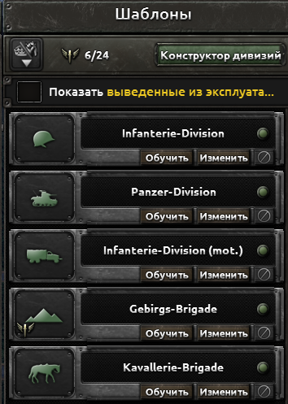
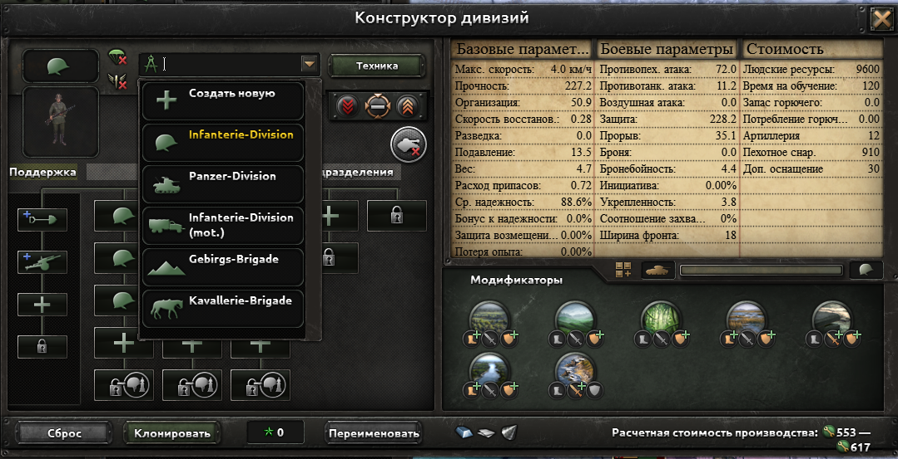
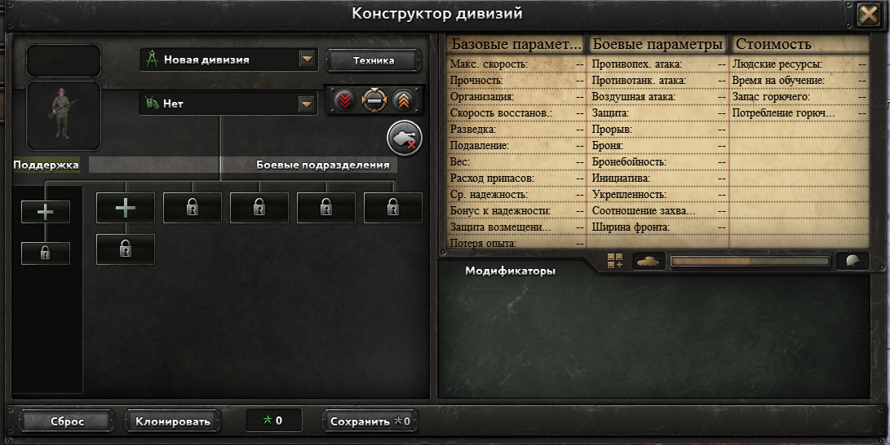
Что такое ШФ это лимит поля боя.У каждого сражения в игре есть максимальный объем «места» (ширина фронта). Этот лимит зависит от типа местности, где идет бой (равнины, горы, города, леса).
Пример: Если лимит боя в лесу равен 60 единицам, а ваша дивизия имеет ШФ 20, то в бой поместятся ровно 3 ваши дивизии (20 + 20 + 20 = 60). Четвертая дивизия встанет в резерв и не будет стрелять, пока одна из первых трех не отступит.
Чистая пехота (12–15 ШФ)
- Состав: 6 или 7 батальонов пехоты.
- Поддержка: Сапёры (для окопов), артиллерия поддержки, ПВО поддержки (сбивает штурмовики и дает пробитие).
- Плюсы: Невероятно дешево. Идеально для закрытия огромных границ.
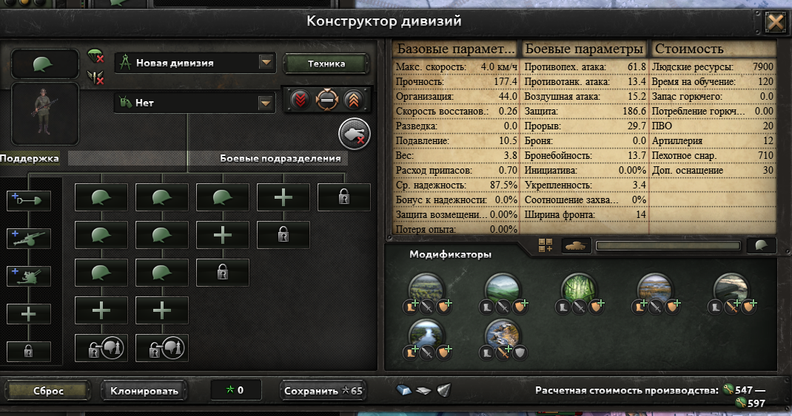
Стойкая пехота (20–22 ШФ)
- Состав: 10 батальонов пехоты.
- Поддержка: Сапёры, арт-поддержка, ПВО, рота разведки.
- Плюсы: Оптимальный размер для удержания лесов и равнин.
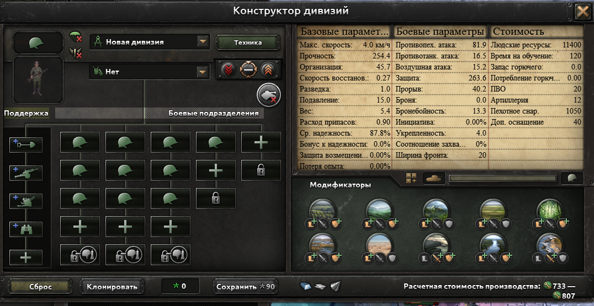
Пехота для наступления (30–35 ШФ)
- Состав: 9–11 пехоты + 3–4 батальона линейной артиллерии.
- Поддержка: Сапёры, арт-поддержка, ПВО, рота обеспечения (защищает от истощения).
- Плюсы: Огромная противопехотная атака. Минус — быстро теряют людей и снаряжение.
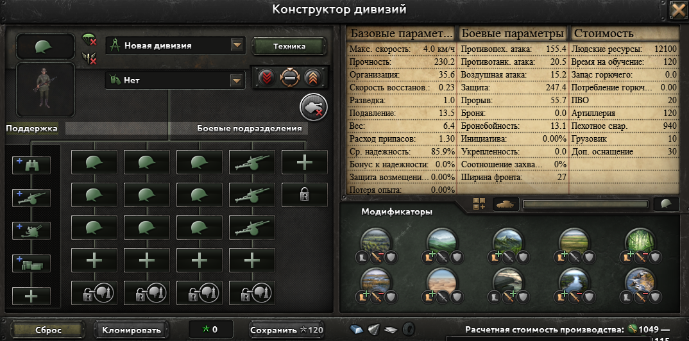
Танковые дивизии (30–35 ШФ)
- Состав: 8–9 средних танков + 6–7 моторизованной (или механизированной) пехоты.
- Поддержка: Сапёры, арт-поддержка, ПВО, рота обеспечения.
- Плюсы: Пробивает любую оборону на равнинах и холмах.
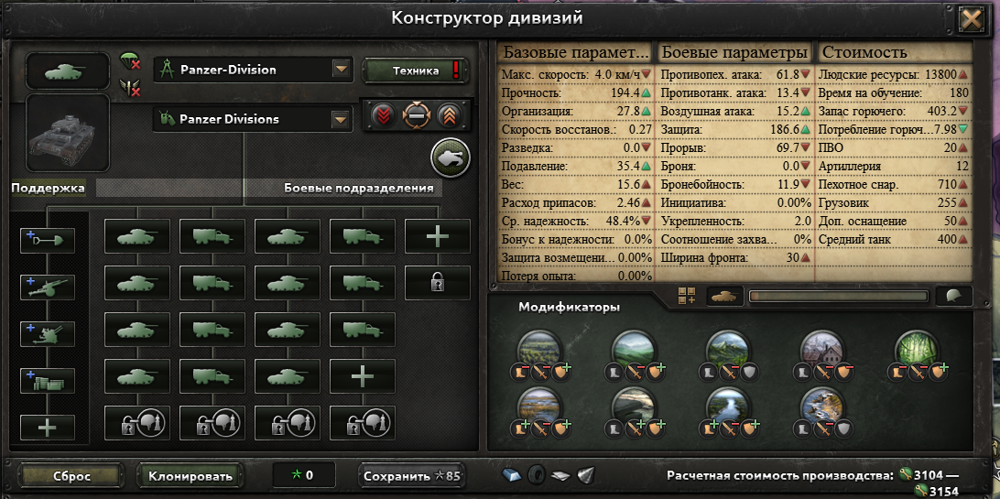
Конструктор среднего танка
Что бы зайти в конструктор Откройте вкладку Производство В верхней части этого окна нажмите на круглую кнопку «Бронетехника». Перед вами откроется список доступных шасси и текущих моделей. Найдите средний танк и нажмите на круглую кнопку со знаком плюс или шестеренкой
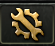
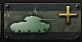
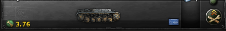
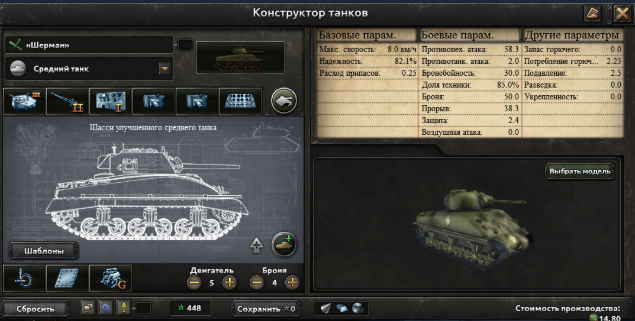
Верхний ряд: 1 – Среднее орудие, Трёхместная башня 2 – Улучшенная средняя гаубица 3 – Базовая радиостанция 4/5 – Тяжёлый пулемёт 6 – Влажное хранилище боеприпасов Нижний ряд: 1 – Подвеска Кристи 2 – Клёпаная броня 3 – Бензиновый двигатель
Конструктор истребителя и штурмовика
Что бы зайти в конструктор самолетов все то же самое только не в броне технику а в самолеты
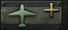
Истребитель нужен что бы получить превосходство над воздухом а штурмовик что бы помогать наземным дивкам
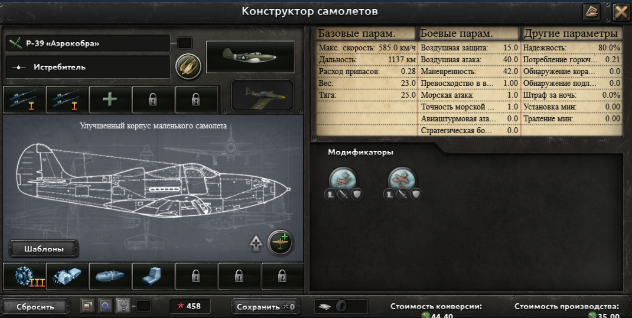
Верхний ряд: 1/2 – 2 орудия I Нижний ряд: 1 – 1 двигатель III 2 – Дополнительные топливные баки 3 – Сбрасываемые топливные баки 4 – Самозатягивающиеся топливные баки На скриншоте используется улучшенный корпус маленького самолёта!
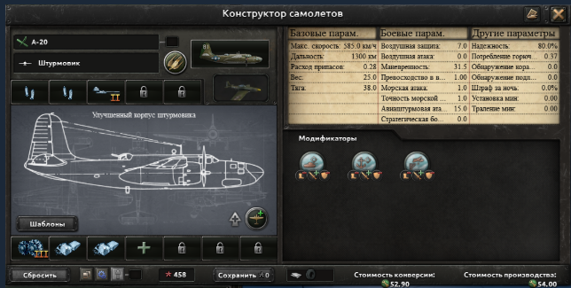
Верхний ряд: 1/2 – Маленький бомбовый отсек 3 – Противотанковое орудие II Нижний ряд: 1 – 2 двигателя III 2/3 – Дополнительные топливные баки На скриншоте используется улучшенный корпус маленького самолёта!